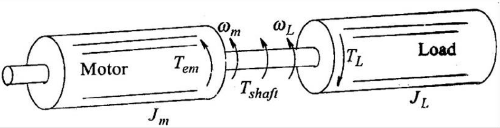
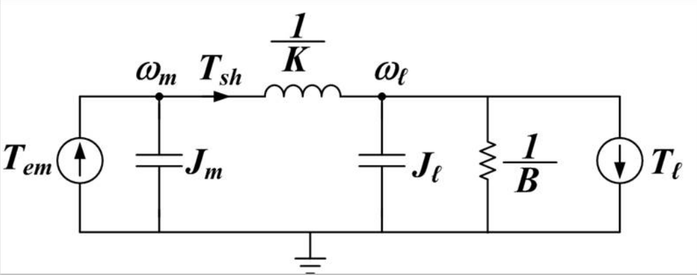
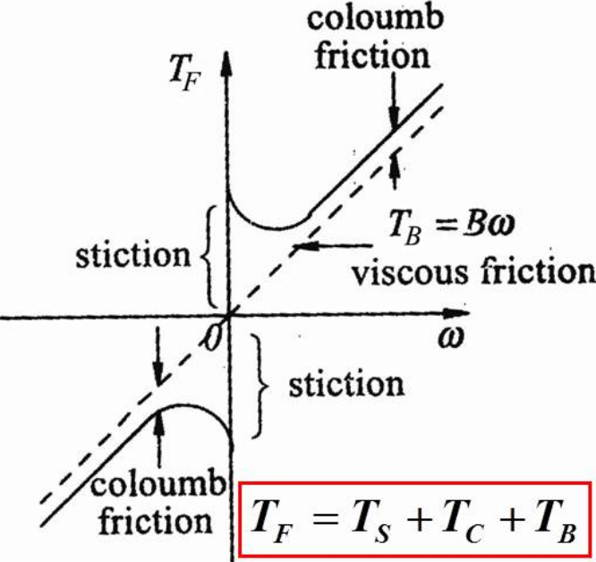
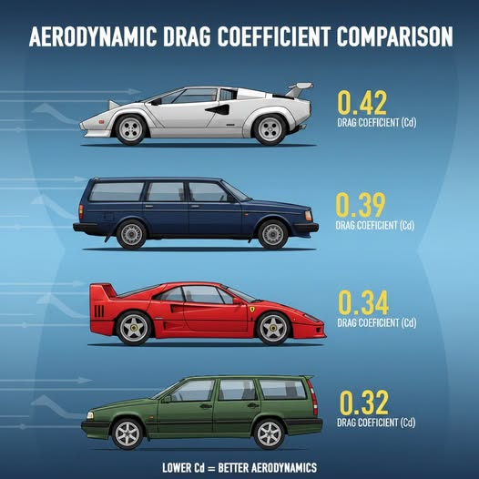
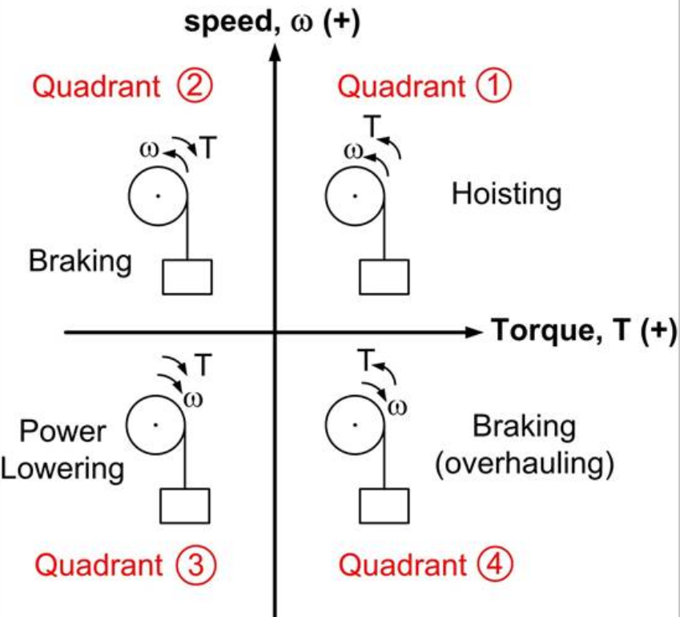

class: center, middle # EE-462 UTILIZATION OF ELECTRICAL ENERGY # Mechanical Systems ## Ozan Keysan ## [keysan.me](http://keysan.me) ### Office: C-113 <span class="meta">•</span> Tel: 210 7586 --- # Linear Motion -- ### \\(\vec{f} = m \dfrac{d\vec{v}}{dt} \\) -- ### It is more common to use "u" in mechanical systems ### \\(u = \dfrac{dx}{dt} \\), \\(a = \dfrac{du}{dt} \\) ### \\(f\_{elec} - f\_{mech} = m \dfrac{du}{dt} \\) -- ### Stored energy: \\(W = \dfrac{1}{2}m u^2\\) --- # Rotational Motion -- ### \\(\vec{T} = J \dfrac{d\vec{\omega}}{dt} \\) -- ### \\(\omega= \dfrac{d \theta}{dt} \\) ### \\(T\_{elec} - T\_{mech} = J \dfrac{d \omega }{dt} \\) -- ### Stored energy: \\(W = \dfrac{1}{2}J \omega^2\\) --- # Moment of Inertia -- ## What is its unit? -- : \\(kg m^2\\) -- <img src="http://ichef.bbci.co.uk/news/640/cpsprodpb/5E90/production/_85580242_85580241.jpg" alt="Drawing" style="width:600px;"/> --- # Importance of Inertia in Drive Systems -- ## [Old Diesel Engine](https://www.youtube.com/watch?v=nFQ64a_cGXg) ## [Engine Start](https://www.youtube.com/watch?v=iPyvKOWl7PY) -- ## Flywheel store kinetic energy, reduce speed ripples -- ## Reduces the dynamic performance of the drive -- ## Large energy to dissipate in dynamic braking --- ## What is the most common shape in electric motors? -- ## Cylinder -- ### What is the inertia of a solid cylinder? -- ## \\(J = \rho \dfrac{\pi}{2} R^4 L\\) -- ## \\(J = \dfrac{1}{2}M R^2\\) --- # Rotational Inertia of Different Shapes <img src="http://www.physics.louisville.edu/cldavis/phys298/notes/rot_KEMofI2.jpg" alt="Drawing" style="width:800px;"/> --- ## Comparison of Different Shapes <img src="http://i.imgur.com/gsI96Gh.gif" alt="Drawing" style="width:700px;"/> --- # Analogy between mechanical & electrical systems -- <img src="https://transmissionlinespeakers.com/wp-content/uploads/2020/04/analogies-table.jpg" alt="Drawing" style="width:700px;"/> --- # Analogy between mechanical & electrical systems <img src="https://www.rfwireless-world.com/.netlify/images?url=_astro%2FAnalogy-between-Mechanical-System-and-Electrical-System.xf3Cm3uu.jpg" alt="Drawing" style="width:600px;"/> ### [Mechanical-Electrical Analogy Explained](https://www.youtube.com/watch?v=AIrJlHu-XL8) --- ## Motor with Load Inertia  --- ## Motor with Shaft: Equivalent Circuit  ### [Low-pass Pi Filter](https://en.wikipedia.org/wiki/Electronic_filter) ### [Pi-Section Filters](http://www.kb6nu.com/tag/pi-network/) ### [Modelling Shaft Stiffness in Simulink](https://www.mathworks.com/help/physmod/sps/powersys/ref/mechanicalshaft.html) ### [Stiffness Animation](http://lpsa.swarthmore.edu/Systems/MechRotating/RotMechSysElem.html), [Drag Race](https://www.youtube.com/watch?v=mfJejgODr3E) --- ## Reading Materials ### [Mechanical-electrical analogies](https://en.wikipedia.org/wiki/Mechanical-electrical_analogies) ### [One-Port Elements](http://web.mit.edu/2.14/www/Handouts/OnePorts.pdf) ### [Electrical Analogies of Mechanical Systems](https://www.tutorialspoint.com/control_systems/control_systems_electrical_analogies_mechanical.htm) ### [Mechanical and Electrical Analogies](http://www.vias.org/matsch_capmag/matsch_caps_magnetics_chap1_20.html) ### [First order mechanical systems](https://www.slideshare.net/JARossiter/system-modelling-1st-order-models) ### [Dynamics of a motor](http://www2.ece.ohio-state.edu/~passino/lab2_rotary_dynamics.pdf) --- # Dynamics of Mechanical Systems: Resonance <img src="https://upload.wikimedia.org/wikipedia/commons/thumb/7/72/Resonant_frequency_amplitude.svg/524px-Resonant_frequency_amplitude.svg.png" alt="Drawing" style="width:300px;"/> ### [Transfer function and mathematical modelling](https://www.slideshare.net/vishalgohel12195/transfer-function-and-mathematical-modeling) -- ### [Tacoma Bridge](https://www.youtube.com/watch?v=lXyG68_caV4) ### [Forced vibration-1](https://www.youtube.com/watch?v=OaXSmPgl1os), [Resonant Freq.](https://www.youtube.com/watch?v=LV_UuzEznHs) ### [Torsional Resonance](https://www.youtube.com/watch?v=JLY-yQOpL20) --- # Resonant Modes ### [Cantilever Vibration](https://www.youtube.com/watch?v=lKT3wBIUFhA) ### [Resonant Modes](https://www.youtube.com/watch?v=uWoiMMLIvco) ### [Modal Shapes](https://www.youtube.com/watch?v=kvG7OrjBirI) ### [Modal Shapes](https://www.youtube.com/watch?v=d3U_m-4XOtg) --- # Frictional Forces: Damping <img src="http://www.maplesoft.com/view.aspx?SI=3926/forced_oscillations125.gif" alt="Drawing" style="width: 300px;"/> ### \\(F = B v = B \dfrac{dx}{dt}\\) : Dissipates energy (~Resistance) ### Overdamped, [underdamped](http://www.youtube.com/watch?v=j-zczJXSxnw) (similar to RLC circuits) ### [Bad vs. good shock absorbers](https://www.youtube.com/watch?v=j0vhTg82Pz0), [Seismic dampers](https://www.youtube.com/watch?v=9KMoJY20WFc), [Tuned mass dampers](https://www.youtube.com/watch?v=RSGwzSp_hAc), [Understanding vibration and resonance](https://www.youtube.com/watch?v=vLaFAKnaRJU) --- # Dynamic Equations: Ideal Spring  ## \\(F = k (x - x_0)\\): No energy dissipation (~Ideal Inductor) --- # Frictional Forces: Coulomb friction <img src="http://www.20sim.com/webhelp/coulombfriction_zoom80.jpg" alt="Drawing" style="width:500px;"/> ### Constant force (does not change with speed) --- # Frictional Forces: Viscous friction (Damping) <img src="http://www.20sim.com/webhelp/viscousfriction_zoom80.jpg" alt="Drawing" style="width:500px;"/> ## Proportional to speed (\\(T= B \omega\\)) --- # Frictional Forces: Static friction ### Extra friction (or stiction) at zero speed  ### Usually small and ignored in linear models --- # Frictional Forces: Coulomb + Viscous ### Extra friction (or stiction) at zero speed <img src="http://www.20sim.com/webhelp/coulombviscousfriction_zoom80.jpg" alt="Drawing" style="width:400px;"/> ### [How to model in Simulink?](https://www.mathworks.com/help/simulink/slref/coulombandviscousfriction.html) --- # Dynamic Equations: Mechanical Side ## \\(f\_{mech} = M \dfrac{d^2 x}{d^2 t} + B \dfrac{dx}{dt} \\) ## \\(\quad \quad \quad + k (x-x\_0) + f\_{external} \\) --- # Windage Torque -- ## Proportional to \\(\omega^2\\) ## \\(T \propto \omega^2\\) -- ## \\(P \propto \omega^3\\) --- ## Example: Drag Force in a Car <img src="https://engineeringcheatsheet.com/wp-content/uploads/2024/03/image-95.png" alt="Drawing" style="width:600px;"/> ## \\(F = \dfrac{1}{2} \rho A C_D v^2 \\) --- # Drag Coefficient  --- # Drag Coefficient Comparison <img src="https://ozaner.github.io/assets/images/physics/drag_coefficients.png" alt="Drawing" style="width:600px;"/> --- ## Coupling Mechanisms: Direct Coupling <img src="http://3.bp.blogspot.com/-TJY53HY54o4/VKLxCEmiFPI/AAAAAAAAAwc/McACFqormIA/s1600/flanged-gear-coupling-lovejoy.png" alt="Drawing" style="width:300px;"/> ### Sleeve Coupling --- ## Coupling Mechanisms: Direct Coupling <img src="http://image.dhgate.com/albu_254058321_00/1.0x0.jpg" alt="Drawing" style="width:360px;"/> ### Jaw Type Coupling --- ## Coupling Mechanisms: Direct Coupling <img src="https://i0.wp.com/luminaire-eg.com/wp-content/uploads/2019/02/LR-SERIES-SPIRAL-BEAM-COUPLING-CLAMP-THREAD-TYPE-1.jpg" alt="Drawing" style="width:400px;"/> ### Spiral Type Coupling --- ## Coupling Mechanisms ## Gearbox <img src="https://www.atareduktor.com.tr/wp-content/uploads/reduktorlu-motor-nedir-.png" alt="Drawing" style="width:500px;"/> ### Gear Ratio = \\( \omega\_{in}:\omega\_{out}\\) #### [Simulink Gearbox](https://www.mathworks.com/help/physmod/simscape/ref/gearbox.html) --- ## Coupling Mechanisms ## Rack and Pinion <img src="https://www.stober.com/wp-content/uploads/ZRPHEZ_G3.png" alt="Drawing" style="width:500px;"/> ### From rotational to linear motion --- ## Coupling Mechanisms ## Belt Coupling <img src="http://3.imimg.com/data3/OQ/AV/MY-733410/c-i-v-belt-pulley-500x500.jpg" alt="Drawing" style="width:500px;"/> --- # Coupling Issues ## [Shaft Misalignment](https://www.youtube.com/watch?v=MXAsKFnCqUE) ## [Unbalanced rotor](https://www.youtube.com/watch?v=R2hO--TIjjA) ## [Rotor Critical Speed](https://www.youtube.com/watch?v=dO51IjGKrTM) --- # Load Types: Centrifugal Loads (Pump, Fan...) <img src="https://5.imimg.com/data5/SELLER/Default/2023/5/312072100/NV/UL/QQ/5148171/electric-motor-water-pump-1000x1000.png" alt="Drawing" style="width:300px;"/> ## \\(T\_{load} = k \omega^2\\) ## \\(P\_{load} = k \omega^3\\) --- ## Constant Power Loads ### Paper rolling machine <img src="https://www.ayyildizmakine.com/en/assets/images/product/kagit-bobin-dilimleme-makineleri/1.webp" alt="Drawing" style="width:600px;"/> ### Constant tension should be applied at constant linear speed --- ## Constant Torque Loads ### Compressors <img src="http://www.machineco.com/Compressor_Air_15HP_V-4cyl_RKMachinery_1.JPG" alt="Drawing" style="width:400px;"/> ## \\(P\_{load} = k \omega\\) --- ## Constant Torque Loads: Conveyors <img src="http://www.linearmotiontips.com/wp-content/uploads/2016/04/ETM-Motors-for-direct-drive-of-conveyor.jpg" alt="Drawing" style="width:400px;"/> ### Usually there is a high starting torque (to overcome static friction) --- ## Constant Torque Loads: Crane Hoists <img src="https://electrical-engineering-portal.com/wp-content/uploads/selection-of-crane-duty-motors-2.jpg" alt="Drawing" style="width:300px;"/> ### There exist a viscous friction force combined with load mass ### \\(T\_{load} = B \omega + T\_{mech}\\) ### Requires a four-quadrant drive [Oil-rig Drawworks](https://www.youtube.com/watch?v=yHfnL43H48g), [Drawworks-2](https://www.youtube.com/watch?v=wgUV5ov2jC0) --- ## Constant Torque Loads: Crane Hoists ### Four quadrant operation  --- ## You can download this presentation from: [keysan.me/ee462](http://keysan.me/ee462)